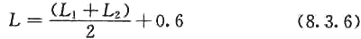

8．3 抗震支吊架设计
8．3．1 每段水平直管道应在两端设置侧向抗震支吊架。
8．3．2 当两个侧向抗震支吊架间距大于最大设计间距时，应在中间增设侧向抗震支吊架。
8．3．3 每段水平直管道应至少设置一个纵向抗震支吊架，当两个纵向抗震支吊架距离大于最大设计间距时，应按本规范第8．2．3条的规定间距依次增设纵向抗震支吊架。
8．3．4 抗震支吊架的斜撑与吊架的距离不得大于0．1m。
8．3．5 刚性连接的水平管道，两个相邻的抗震支吊架间允许纵向偏移值。应符合下列规定：
1 水管及电线套管不得大于最大侧向支吊架间距的1／16；
2 风管、电缆梯架、电缆托盘和电缆槽盒不得大于其宽度的两倍。
8．3．6 水平管道应在离转弯处0．6m范围内设置侧向抗震支吊架。当斜撑直接作用于管道时，可作为另一侧管道的纵向抗震支吊架，且距下一纵向抗震支吊架间距应按下式计算：

式中：L——距下一纵向抗震支吊架间距(m)；
L1——纵向抗震支吊架间距(m)；
L2——侧向抗震支吊架间距(m)。
8．3．7 当水平管道通过垂直管道与地面设备连接时，管道与设备之间应采用柔性连接，水平管道距垂直管道0．6m范围内设置侧向支撑，垂直管道底部距地面大于0．15m应设置抗震支撑。
8．3．8 当抗震支吊架吊杆长细比大于100或当斜撑杆件长细比大于200时，应采取加固措施。
8．3．9 所有抗震支吊架应和结构主体可靠连接，当管道穿越建筑沉降缝时应考虑不均匀沉降的影响。
8．3．10 水平管道在安装柔性补偿器及伸缩节的两端应设置侧向及纵向抗震支吊架。
8．3．11 侧向、纵向抗震支吊架的斜撑安装，垂直角度宜为45°，且不得小于30°。
8．3．12 抗震吊架斜撑安装不应偏离其中心线2．5°。
8．3．13 沿墙敷设的管道当设有入墙的托架、支架且管卡能紧固管道四周时，可作为一个侧向抗震支撑。
8．3．14 单管(杆)抗震支吊架的设置应符合下列规定：
1 连接立管的水平管道应在靠近立管0．6m范围内设置第一个抗震吊架；
2 当立管长度大于1．8m时，应在其顶部及底部设置四向抗震支吊架。当立管长度大于7．6m时，应在中间加设抗震支吊架；
3 当立管通过套管穿越结构楼层时，可设置抗震支吊架；
4 当管道中安装的附件自身质量大于25kg时，应设置侧向及纵向抗震支吊架。
8．3．15 门型抗震支吊架的设置应符合下列规定；
1 门型抗震支吊架至少应有一个侧向抗震支撑或两个纵向抗震支撑；
2 同一承重吊架悬挂多层门型吊架，应对承重吊架分别独立加固并设置抗震斜撑；
3 门型抗震支吊架侧向及纵向斜撑应安装在上层横梁或承重吊架连接处；
4 当管道上的附件质量大于25kg且与管道采用刚性连接时，或附件质量为9kg～25kg且与管道采用柔性连接时，应设置侧向及纵向抗震支撑。